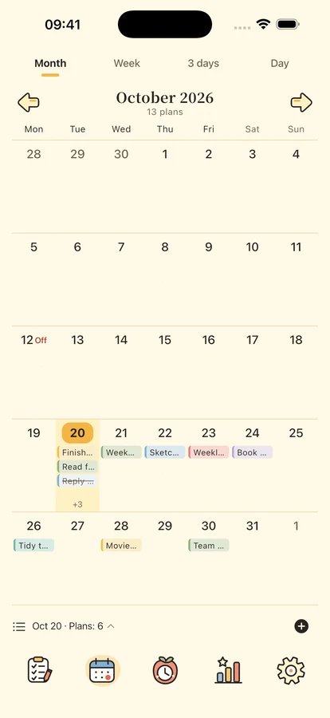
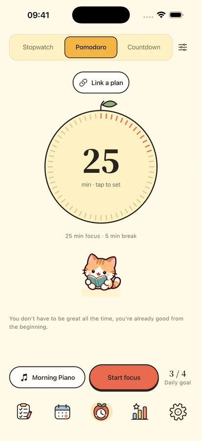
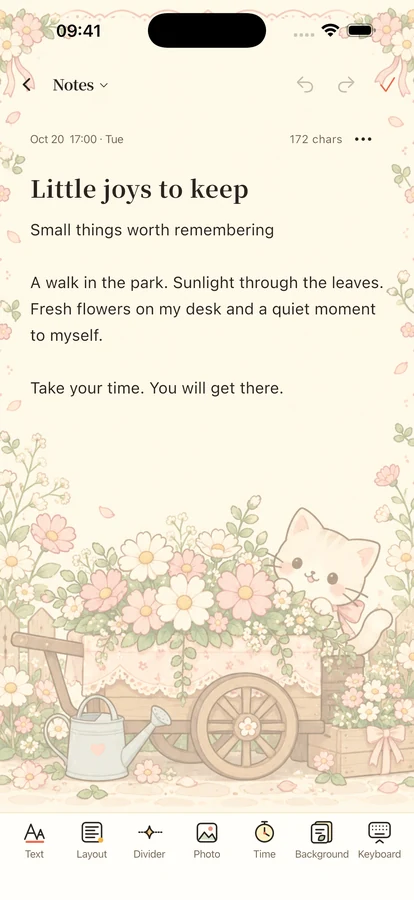

Eisenhower Planner & Pomodoro Timer
Make room for what matters. Sort your plans into four quadrants, focus on one thing, and keep your notes and meaningful dates close by.
Available for iPhone and iPad

One thing at a time.
Start with one small thing
A place for your plans, your time, and a little encouragement.

Give each plan its place.
Separate importance from urgency with four quadrants. Explore your day, week, and month through the timeline and calendar, with repeating plans, subtasks, and local reminders.
Make time for the thing in front of you.
Choose Pomodoro, countdown or stopwatch, with 8 offline music tracks and 11 ambient sounds. Four companions and a quiet flip clock keep you company through focus and rest. The full library needs Plus or the three-day trial; one music track, one ambient sound and silence remain free. Plus: Premium clock styles · Premium widgets · Insights · Plan templates · Auto cloud backup · Backup history.


Keep the days worth remembering.
Capture thoughts with rich text, photos and memo papers, browse by date or category, and look forward to birthdays and anniversaries. On iOS 17 and later, add home-screen widgets for plans, calendars, focus, countdowns, and memos.
Your everyday life is yours.
Use local features without signing in. Upload cloud backups when you choose. Usage analytics is off by default, with controls to export your content, adjust privacy choices, and delete your account.
See how your data is handled